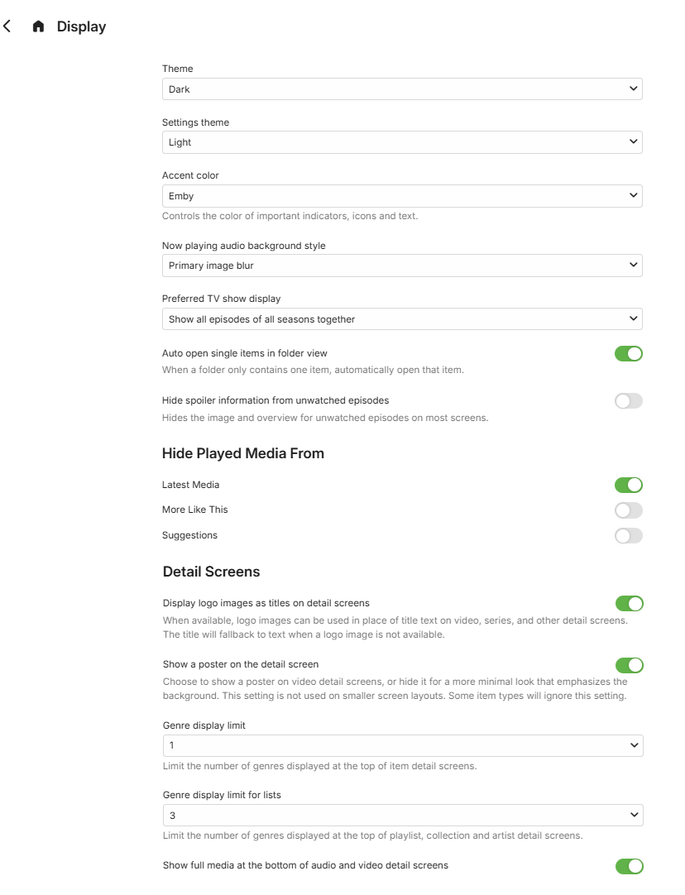

User Preferences - Display
The Display user preferences cover the following:
Display
- Theme
- Apple TV
- Black
- Red Radiance
- Dark
- Light
- Superman
- Windows Media Center
- Settings Theme: Same as main theme or choice as above
- Color
- Emby
- Blue
- Green
- Pink
- Purple
- Red
- Now Playing audio background style
- Backdrop
- Primary image blur
- Preferred TV show display
- Show all episodes of all seasons
- Show all episodes of only single season shows
- Always show season folders
- Auto open single items in folder view
- Hide Spoiler information from unwatched episodes
Hide Played Media from
More Like This
Suggestions
Details Screen
- Display logo images as titles on details screens
- Show a poster on the detail screen
Genre display limit
Genre display limit for lists
Show full media at the bottom of audio and video detail screens
